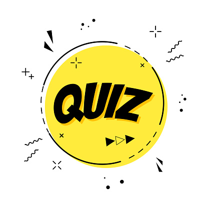

<div class="container">
  <div class="img-logo">
    
  </div>
  <div class="btns d-grid gap-2 col-5 mx-auto">
    <button type="button" class="btn btn-warning" routerLink="info">
      Instruções
    </button>
    <button type="button" class="btn btn-dark" routerLink="list">Jogar</button>
  </div>
  <footer class="copyright">
    Desenvolvido por
    <a href="https://github.com/jhops10" target="_blank">João Paulo</a>
  </footer>
</div>
